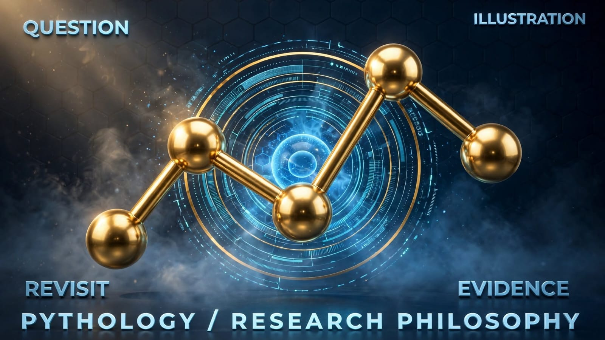

01
A question worth pursuing
Look beyond what happened and ask which earlier measurements might have mattered, and which do not.
.jpeg) PYTHOLOGY
PYTHOLOGYABOUT PYTHOLOGY · MANAWATŪ, NEW ZEALAND
Pythology began with a deceptively simple question: what changed before it happened? The answer cannot be assumed. It has to be investigated, challenged and documented.

Pythology is developing Prometheus across distinct research fields. Our shared discipline is to preserve observations, expose uncertainty and test hypotheses against reality.
Look beyond what happened and ask which earlier measurements might have mattered, and which do not.
Make timestamps, sources, failed hypotheses and changes to methods visible.
Separate working engineering systems, exploratory studies and unverified long-term ambitions.
Building Pythology through self-directed learning and alongside a full-time job has meant following one question through successive projects, not beginning with a polished company roadmap.
I did not start Pythology with a grand plan to build an intelligence company. I kept building things, asking harder questions, and running into the same problem: software could often give me an answer, but it was much harder to see why the answer deserved to be believed.
That idea kept following me from one project into the next. What changed first? Which evidence is real and which part is inferred? What else could explain it? If the explanation is right, what should happen next? And, perhaps most importantly, what would prove us wrong?
Eventually those questions stopped looking like features and started looking like the architecture itself. EarthNet became a place to test the idea against the messy outside world. Prometheus became the part willing to write a forecast down before the answer was known — and then run Decision Futures scenarios himself. Sentinel became the operational overseer that watches the machinery and tells us when something breaks or degrades.
Pythology is still early. I would rather say that plainly than dress six months of building up as a twenty-person laboratory. The interesting part is that there is now enough working machinery to test the idea properly.
The projects were not a perfectly planned roadmap. Each one exposed a problem underneath the previous one, until the common thread became difficult to ignore.
Brent Robertson started Pythology through self-directed learning and sustained work alongside a full-time job.
Patterns are useful only when alternative explanations and ordinary variation have been tested.
Research teams, agencies and potential partners can bring specific questions where better evidence would help.

My brain has a tendency to connect things. I'll start looking at one problem and find myself thinking about three others. Something happening in the atmosphere leads me to think about environmental monitoring; an unusual geological pattern leads to questions about precursors. But every apparent connection still needs to survive evidence.
I don't come from a conventional academic research background. I'm self-taught. Much of Pythology has been built around an ordinary full-time job, during evenings, weekends and whatever other hours I could find.
When the Chatham Islands community publicly raised concerns about access to weather information, I saw a problem that technology could help address. We built Helios, a weather intelligence system, and made it freely available to the community.
We also developed Chathams EcoWatch for conservation-monitoring needs on the islands, including potential use by the Department of Conservation. That work is not presented as an official DOC endorsement or contract. Those projects matter to me because even a small independent research effort can build something useful.
If something we've built helps a remote community access better information, that matters. If environmental monitoring helps protect a vulnerable ecosystem, that matters.
And if, one day, our research helps scientists recognise a dangerous event earlier — giving people more time to act — then all those evenings, weekends, difficult problems and failed experiments will have been worth it. I'm not claiming we've achieved that last goal. It's the reason to keep asking questions.
Tell us about a problem where better evidence could make a real difference.